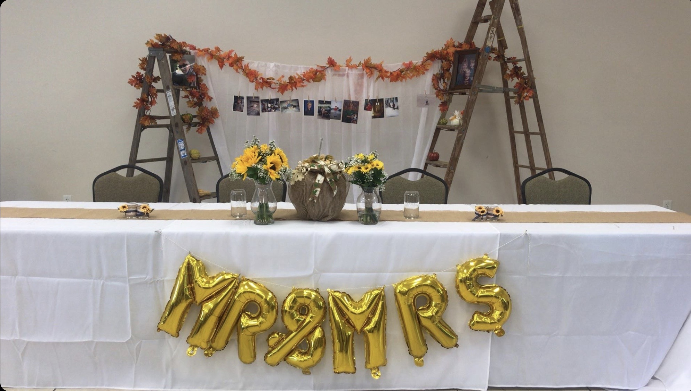
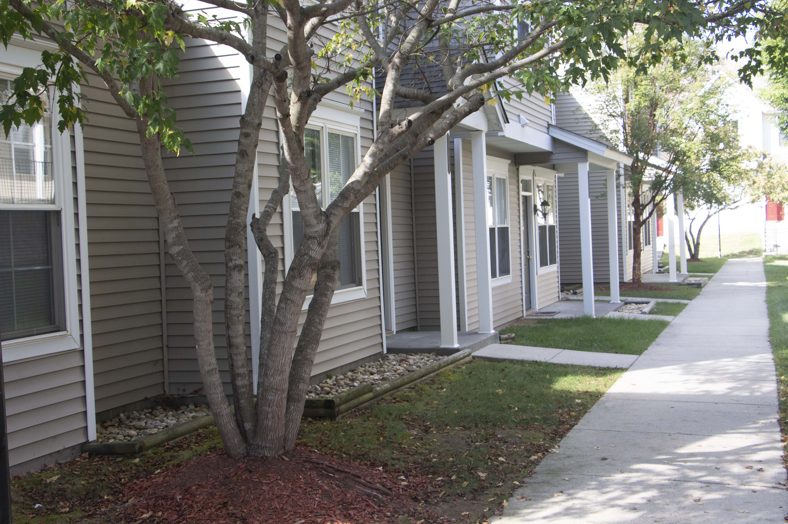

The focal point is the center of attention in the design or layout.
White Space is Not You Enemy, by Golombisky and Hagen (2016). Focal Press.
In simpler terms, the focal point in the most important visual aspect of the page. It should be the first thing eye goes to. That being said, there should be only one per page.
Taken on an Iphone XS

The wedding table is framed by the ladders on each side. It is also centered in the photo, therefore being the focal point of the picture.
Taken on a DSLR Camera

In this photo, the shape of the tree grabs your attention because the color contrasts the house behind it.